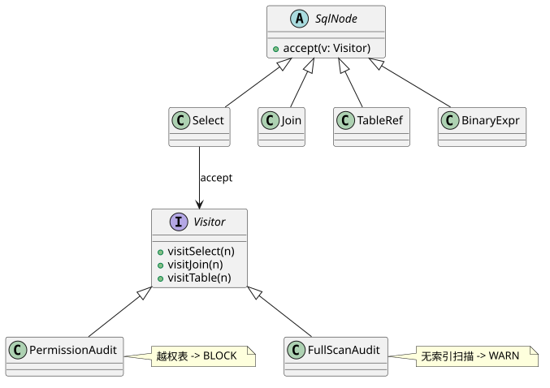

目录树要做统计：文件数、总字节、最大文件、按扩展名分组……如果每加一种统计就改每个节点，节点会变成统计代码的垃圾场。访问者把统计搬出去：节点只负责 accept，访问者决定访问时做什么。
坏写法是节点里塞满统计字段：
struct node { int size; int file_count; int max_size; ... };
/* 每加一种统计，所有节点都要改 */节点本该只描述“我是文件还是目录、我有多大”；统计是使用方的关注点，不该焊进数据结构。
访问者把动作外置：节点调 accept(v)，访问者按节点类型分别处理。加统计只加访问者，节点不动。
左边是节点，中间是 accept 分派，右边是访问者。
C 版节点里放 accept 函数指针，访问者是一组回调；C++ 版用 accept(Visitor&) + 虚函数实现双重分派。
/* 访问者 · 文件统计
* gcc -std=c11 -Wall -Wextra visitor.c -o visitor
*/
#include <stdio.h>
typedef struct visitor visitor_t;
typedef struct node node_t;
struct node {
char name[16];
int is_dir;
int size;
node_t *kids[3];
int nkids;
void (*accept)(node_t *, visitor_t *);
};
struct visitor {
int files;
int total;
void (*visit_file)(visitor_t *, const node_t *);
void (*visit_dir)(visitor_t *, const node_t *);
};
static void file_accept(node_t *n, visitor_t *v) { v->visit_file(v, n); }
static void dir_accept(node_t *n, visitor_t *v) { v->visit_dir(v, n); }
static void count_file(visitor_t *v, const node_t *n)
{
v->files++; v->total += n->size;
printf(" 文件 %s (%d 字节)\n", n->name, n->size);
}
static void enter_dir(visitor_t *v, const node_t *n)
{
printf(" 进入目录 %s\n", n->name);
(void)v;
}
int main(void)
{
node_t a = { "a.c", 0, 120, { 0 }, 0, file_accept };
node_t b = { "b.c", 0, 80, { 0 }, 0, file_accept };
node_t d = { "src", 1, 0, { &a, &b, NULL }, 2, dir_accept };
node_t r = { "root", 1, 0, { &d, NULL, NULL }, 1, dir_accept };
visitor_t v = { 0, 0, count_file, enter_dir };
r.accept(&r, &v);
d.accept(&d, &v);
a.accept(&a, &v);
b.accept(&b, &v);
printf("统计：%d 个文件，%d 字节\n", v.files, v.total);
printf("节点只负责 accept，统计逻辑在 visitor 里\n");
return 0;
}进入目录 root 进入目录 src 文件 a.c (120 字节) 文件 b.c (80 字节) 统计：2 个文件，200 字节 节点只负责 accept，统计逻辑在 visitor 里
// 访问者 · 文件统计
// g++ -std=c++17 -Wall -Wextra visitor.cpp -o visitor_cpp
#include <cstdio>
#include <memory>
#include <string>
#include <vector>
class Visitor;
class Node {
public:
Node(std::string name, bool dir, int size = 0)
: name_(std::move(name)), dir_(dir), size_(size) {}
virtual ~Node() = default;
virtual void accept(Visitor& v) = 0;
const std::string& name() const { return name_; }
int size() const { return size_; }
bool isDir() const { return dir_; }
private:
std::string name_;
bool dir_;
int size_;
};
class File final : public Node {
public:
File(std::string n, int s) : Node(std::move(n), false, s) {}
void accept(Visitor& v) override;
};
class Dir final : public Node {
public:
Dir(std::string n) : Node(std::move(n), true) {}
void add(std::unique_ptr<Node> k) { kids_.push_back(std::move(k)); }
const std::vector<std::unique_ptr<Node>>& kids() const { return kids_; }
void accept(Visitor& v) override;
private:
std::vector<std::unique_ptr<Node>> kids_;
};
class Visitor {
public:
virtual ~Visitor() = default;
virtual void visitFile(const File& f) = 0;
virtual void visitDir(const Dir& d) = 0;
};
class Counter final : public Visitor {
public:
void visitFile(const File& f) override {
++files_; total_ += f.size();
std::printf(" 文件 %s (%d 字节)\n", f.name().c_str(), f.size());
}
void visitDir(const Dir& d) override {
std::printf(" 进入目录 %s\n", d.name().c_str());
}
int files() const { return files_; }
int total() const { return total_; }
private:
int files_ = 0;
int total_ = 0;
};
void File::accept(Visitor& v) { v.visitFile(*this); }
void Dir::accept(Visitor& v) { v.visitDir(*this); }
int main()
{
auto a = std::make_unique<File>("a.c", 120);
auto b = std::make_unique<File>("b.c", 80);
auto src = std::make_unique<Dir>("src");
src->add(std::move(a));
src->add(std::move(b));
Counter c;
src->kids()[0]->accept(c);
src->kids()[1]->accept(c);
src->accept(c);
std::printf("统计：%d 个文件，%d 字节\n", c.files(), c.total());
std::puts("节点只负责 accept，统计逻辑在 visitor 里");
return 0;
}文件 a.c (120 字节) 文件 b.c (80 字节) 进入目录 src 统计：2 个文件，200 字节 节点只负责 accept，统计逻辑在 visitor 里
| 角色 | C 版 | C++ 版 | 差别意味着什么 |
|---|---|---|---|
| 分派 | accept 函数指针 + 回调 | accept(Visitor&) 虚函数 | C 手动，C++ 双重分派 |
| 节点状态 | 只存名字/类型/大小 | 只存名字/类型/大小 | 不塞统计字段 |
| 加统计 | 加一个访问者结构 | 加一个 Visitor 子类 | 节点完全不动 |
| 遍历 | 调用方按树结构递归 | 调用方按树结构递归 | 访问者不负责找孩子 |
参考教程：refactoringguru.cn
生产实例：SQL 审核里的 AST 访问者
SQL 上线前要审：是否全表扫描、有没有越权表、是否写了笛卡尔积。解析器产出 AST，节点成千上万；如果每种规则都写一遍递归，AST 一升级全崩。访问者把规则搬出节点：解析器只负责 accept，审核规则各自实现 visit。

@startuml
abstract class SqlNode {
+accept(v: Visitor)
}
class Select
class Join
class TableRef
class BinaryExpr
SqlNode <|-- Select
SqlNode <|-- Join
SqlNode <|-- TableRef
SqlNode <|-- BinaryExpr
interface Visitor {
+visitSelect(n)
+visitJoin(n)
+visitTable(n)
}
class PermissionAudit
class FullScanAudit
Visitor <|-- PermissionAudit
Visitor <|-- FullScanAudit
Select --> Visitor : accept
note right of PermissionAudit: 越权表 -> BLOCK
note right of FullScanAudit: 无索引扫描 -> WARN
@enduml